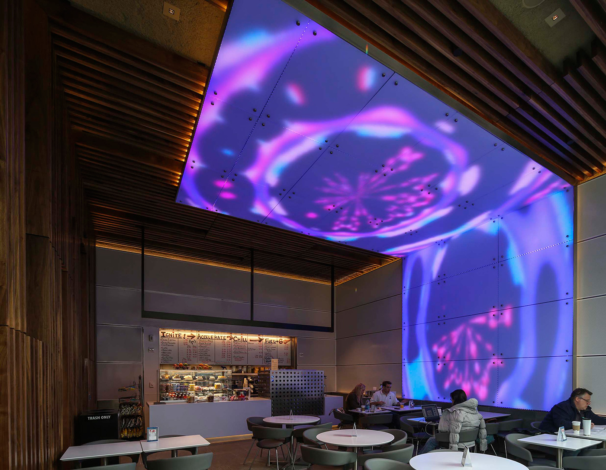
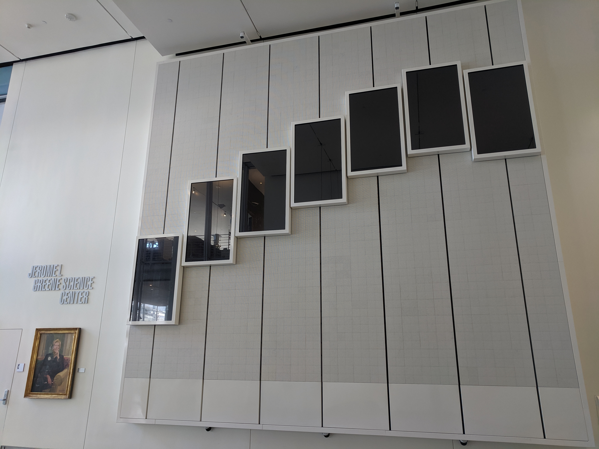

Generative Art
System Configuration
|------|
| mp | ---> D_out
|------|
This is the simplest class of systems we will address - a microprocessor with digital out. We address two options for digital out - either visual or audio. This captures well the domain of generative art - the practice of using automation to create content. Generative works are those created with the assistance of a program that significantly, sometimes entirely, informs the composition and realization of the work.
Generative art can be static (complete) or dynamic (iterative). In dynamic generative art the generative process is treated as content, rather than static content produced by the process. Some examples of static content includes using an algorithm to generative designs for scarfs, that are then custom knitted. While this falls into the category of generative art, the content is the art, whereas the process is not, in this case, presented to the audience.
In contrast, in dynamic generative art the process of generation is visible to the audience. We provide some examples below of this style of generative art. We note that we are particularly interested in generative processes that fit into a semi-automated definition - by some process, random or otherwise, the output of the system at any given time should not be predictable based solely on the initial state. The generative process evolves in a way that cannot be captured by fixed media.
Generative Art vs Visualizations
Can a data visualization be considered generative art? Can all data visualizations be considered generative art? Understanding these classifications can help us to make more directed creative choices in our art. While data visualizations and generative art are certainly not mutually exclusive, there is a difference in ethos between the two. Whereas data visualizations are conceptually driven by the data ingest, generative art is conceptually driven by the creative choices of the artists. In generative art, the process is designed to be self-consuming, generally using its own internal state to evolve. Data ingest may play a role in how the artist chooses to evolve the state of the system, but it does not (generally) dominate.
Application Domains
Live Coding
In our taxonomy of systems, we allow audio or visuals as Dout. One creative practice that falls into this category is live coding. Live Coding is an artistic practice where the act of programming becomes a critical part of the end product. Rather than creating a static program that is deployed to users after it is complete, live coding shifts this perspective. It is the process of creating the software that is shown now users. Nick Collins, a pioneer of live coding, captures this sentiment well in giving a description of live coding:
“Art of re-programming; changing your mind about a process once established”
-Nick Collins
The practice of live coding can be more formalism on a stage, where the music produced is more beat oriented. In this example, Sam Aaron, the developer of Sonic Pi, demonstrates his live coding practice.
For live coding, we do require some input from the artist (in the form of a keyboard and mouse), however the act of providing input is not “visible” to the viewer. To say the input is not visible to the viewer is not to say it is not an integral part of the performance. Indeed, one of the oft repeated mantras of live coding is “show your code”. Allowing the viewer to watch the source of the live coded content evolve is a defining feature of the practice of live coding. However, what is shown to the viewer is the code on the screen - not (generally) the physical process of inputting the code. From the perspective of an embedded system, we are not making the input modality a part of the system. We will revisit the issue of physically visible input in Module 2, Interactive Devices.
Audio Live Coding
Your Raspberry Pi (with Raspbian OS) comes pre-installed with a program called Sonic Pi, a language for live coding audio. You can start exploring the practice of live coding with this tool. A tutorial is available within the Sonic Pi IDE. Live coding does not strictly follow the system configuration described above, as we also use an input to the system from the performer.
In order to use Sonic Pi for generative art in the system configuration we present in this chapter, we need to start a Sonic Pi program when the device boots. Details on this procedure are provided in Appendix. Starting a generative art program during the boot sequence of the embedded device is a standard way to package your project into a self-contained and easy to use installation.
Another language for live coding audio is Tidal, which is an embedded DSL in Haskell. As opposed to Sonic Pi, which is beat oriented, Tidal is pattern oriented, which tends to lead artists down a different creative path. It is also possible to live code in SuperCollider, which tends to be more signal oriented.
These live coding languages can also be used to create generative audio processes that do not require input from the artist. For example, you might have a Sonic Pi program pre-written that algorithmically generates music. You could start that script on boot, so the audio begins playing as soon as the Pi is powered on.
Visual Live Coding
Live coding for visuals is also an active space of exploration. In this section, we will focus on Dout as only visuals. In the space of live coding as an artistic practice, visualists are often separate performers from the audio live coders. Consequentially, many performances of live coding with visuals will be duets, where the two performers collaborate on stage.
In order to quickly test out some live coding for visuals, the programming language Hydra is available online.
The practice of live coding can also be more informal, as in this example, which is set in a less formalized environment. This set is presented by Alex McLean on audio and Dan Hett on visuals.
Similar to audio, you could use a tool like Hydra to generate visuals, and start that script on boot, so the visuals immediately start when the Pi is powered on.
Kiosk Installation Art
We use the term kiosk installation art to capture standalone generative art installations that do not take input from the viewer. This type of installation is captured well by the Generative Art system configuration described above. Such installations are often found as stations in museums, but are also often found in public spaces.
The space in which kiosk installation art is to be displayed should be an important design consideration. If a museum, you might expect a longer term engagement with each audience members. In contrast, in a public space, more audience members are likely to engage with your art for shorter periods of time, perhaps as they walk by the display. In the below example of the LED display in the Becton Ground Cafe at Yale University, the majority of users will engage with the work while passing by the building, some will engage as they are eating or working in the cafe, and small minority will enter the cafe specifically to view your work. It is again a creative choice to decide which subset of the audience you are primarily designing for, or if in fact there is a dichotomy between these groups at all.
As a note, some installation art will rely on input from the viewer. The viewer may contribute to the art knowingly (actively) or unknowingly (passively). We will not draw a formal distinction between these two types of input as, from a technical perspective, we must solve similar issues. We revisit issues of interactivity in future modules.
Multichannel displays

An example of a video installation exhibit at Yale’s Becton Ground Cafe.

Columbia University’s Morningside Heights Campus at the Greene Science Center also features a video wall.
One type of kiosk installation art is multichannel displays. In a multichannel video display, there are multiple displays available to the artist. In the simplest case, the displays have the same virtual layout as their physical counterpart. However, in an increasing number of cases, the connection between the virtual layout and the physical layout is disjoint. This presents a challenge/opportunity for the artist to work within the dissonance of the virtual and physical worlds.
Assignment
Generative Kiosk Art (20 pts)
In this lab you will you use your:
- Raspberry Pi
- external monitor
- Freenove 8 RGB LED module
The goal is to create a generative kiosk art installation in your home that faces outward. You will place your monitor and LED module in a window, and create a visualization that fits this context. Use this opportunity to reflect on the connection between your living space, the outside world, and how we have experienced this divide in the past year.
NOTE: proceed with caution, but don’t be scared! You are displaying art (possibly for the first time) to the public. Consider: who will see this, what will they see, when will they see it? You may choose to put up your installation for only a short time (long enough for you to document your installation).
From a software perspective, you will write a
- python script to control the LED module that utilizes data from a web API of your choice
- a processing script to control the external monitor
- edit the file to start both of these scripts on boot
Task #1
In Task #1, you will write a generative visualization in Processing. You need to get this code onto your Pi, and set up the Pi so that your processing script runs on boot, in full screen mode.
We will lay the foundations for task on Friday lab, 1/15.
Task #2
Get the 8 RGB LED module connected to the Raspberry Pi. Use python to control the LEDs. The LED module you have follows the same configuration as a Neopixel module. You should mostly follow the sample code is here. https://learn.adafruit.com/neopixels-on-raspberry-pi/overview.
We will start this task on Friday lab, 1/22.
This is the first open-ended, creatively driven project of the class. There are two main goals. The first goal is to introduce you to the challenge of working with an underspecified problem - modelling the typical real world constraints given to installation artists of: “make something for this space”. The second goal is to get you comfortable with showing you art to the world in a low stakes way.
Deliverables:
- (10 pts total - see below for breakdown) A link to your git repository with a program that runs on a Raspberry Pi to generate a visual for your display. The program must meet the following criteria:
- (3 pts) Be generative as defined in the course text (now you have to at least skim the reading)
- (2 pts) Start on boot of the Raspberry Pi, and display fullscreen (for processing).
- (2 pts) Call a web API.
- (2 pts) LEDs must turn on and respond to your code.
- (1 pts) Is in the spirit of the class as broadly interpreted by the instructors. Art is subjective, we want you to get comfortable with this ethos.
Standard Documentation Deliverables:
In addition to the project specific deliverables lists above, you must also meet the following “standard documentation deliverables”. Throughout this course, we will ask you to document your work in order to slowly build a portfolio of your projects. Going forward, these types of standard documentation deliverables can be assumed to be required for all assignments unless specified otherwise.
(5 pts) A blog post
Using the blog site (more info to come), make a blog post describing your art. The post should give an overview of your artistic vision. In particular for this assignment, you should address how you have specialized your generative art to the space. What creative decisions did you work lead you to, and which decisions did you take? How were your decisions motivated by your larger creative vision for this project. In the same vein, also address any technical issues you encountered in your work. Particularly focus on issues that other artists may encounter when developing with your hardware setup.
(3 pts) A README
On your github repo add a readme that contains a short description and key information on reproducibility/installation/usage. This key information should be sufficient for a knowledge third party, outside the class, to replicate your design. This readme can/should be a subset of the material used in your CoursePress blog post.
(2 pts) A video of your art
Include in the README a link to your video. The video can be a simple video shot on your phone - the only goal is to have a record of your art in action. You can host the video wherever you like as long as the hosting platform supports in-browser playback (e.g. YouTube, Vimeo). You may also choose to embed a gif in your README in place of a video link.
If you cannot access a public space from which you window is visible, please message me directly.